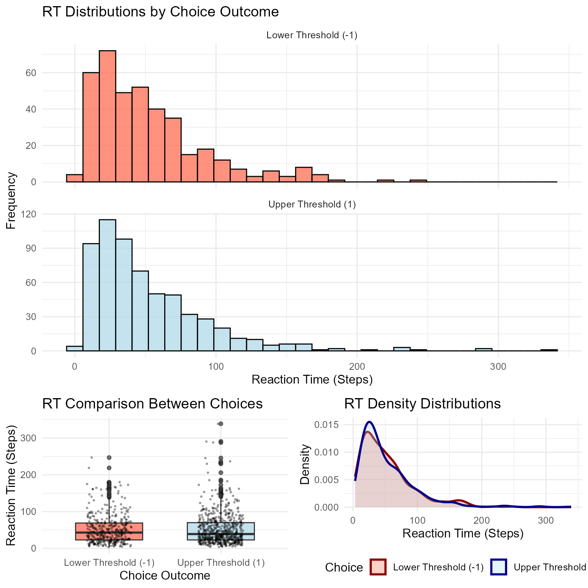

Introduction to Random Walks in R
Dogukan Nami Oztas
2025-05-16
01_introduction_to_random_walks.RmdWhat is a Random Walk?
A random walk is a mathematical object, known as a stochastic or random process, that describes a path that consists of a succession of random steps on some mathematical space. In simpler terms, it’s a process where the next position is determined by a random step from the current position.
Random walks are fundamental to understanding more complex models like the Diffusion Decision Model (DDM), where they represent the noisy accumulation of evidence over time leading to a decision.
In this vignette, we’ll explore a simple one-dimensional random walk where evidence accumulates until it reaches one of two decision thresholds.
Simulating a Single Random Walk Trial
We have created a function simulate_random_walk_trial() in R/01_random_walk_simulator.R to simulate a single instance of this process.
Key Parameters:
start_point: The initial value of the evidence (default: 0).
threshold: The (positive) value of the decision boundaries. A decision is made when the absolute evidence reaches this threshold (default: 10).
drift: The average amount added to the evidence at each step. A positive drift biases the walk towards the upper threshold, and a negative drift biases it towards the lower threshold (default: 0.1).
sd_step: The standard deviation of the step size, representing the noise in the accumulation process (default: 1).
max_steps: The maximum number of steps allowed before a trial is terminated (to prevent infinite loops if a threshold is never reached) (default: 10000).
Let’s simulate a few single trials:
set.seed(123) # For reproducibility
trial1 <- simulate_random_walk_trial(drift = 0.2, threshold = 5, sd_step = 1)
print(paste("Trial 1: Choice =", trial1$choice, ", RT (steps) =", trial1$rt))## [1] "Trial 1: Choice = 1 , RT (steps) = 13"
trial2 <- simulate_random_walk_trial(drift = -0.1, threshold = 5, sd_step = 1)
print(paste("Trial 2: Choice =", trial2$choice, ", RT (steps) =", trial2$rt))## [1] "Trial 2: Choice = -1 , RT (steps) = 13"
trial3 <- simulate_random_walk_trial(drift = 0.01, threshold = 5, sd_step = 1, max_steps = 50) # Forcing a potential non-decision
print(paste("Trial 3: Choice =", trial3$choice, ", RT (steps) =", trial3$rt))## [1] "Trial 3: Choice = 1 , RT (steps) = 11"The choice output is 1 for the upper threshold, -1 for the lower threshold, and NA if max_steps was reached. The rt is the number of steps taken.
Simulating a Random Walk Experiment
To understand the behavior of the random walk model, we typically simulate many trials. The simulate_random_walk_experiment() function handles this. It takes n_trials as an argument and any other parameters that simulate_random_walk_trial() accepts.
Let’s simulate an experiment with 1000 trials:
set.seed(456)
n_sim_trials <- 1000
rw_data <- simulate_random_walk_experiment(
n_trials = n_sim_trials,
threshold = 10,
drift = 0.05, # A slight positive drift
sd_step = 1.5
)
# Display the first few rows of the simulated data
# Using kable for nicer printing if knitr is rendering to HTML
knitr::kable(head(rw_data), caption = "First 6 trials of the simulated random walk experiment.")| trial | choice | rt |
|---|---|---|
| 1 | 1 | 19 |
| 2 | 1 | 78 |
| 3 | 1 | 134 |
| 4 | 1 | 54 |
| 5 | 1 | 48 |
| 6 | 1 | 28 |
The resulting rw_data is a data frame containing the trial number, choice, and rt for each simulated trial.
Analyzing Experiment Results
1. Choice Proportions
We can calculate the proportion of choices for the upper and lower thresholds.
# Filter out NA choices (if any trials hit max_steps)
valid_rw_choices <- rw_data %>% filter(!is.na(choice))
if(nrow(valid_rw_choices) > 0) {
choice_summary <- valid_rw_choices %>%
count(choice) %>%
mutate(
proportion = n / sum(n),
choice_label = factor(choice, levels = c(-1, 1), labels = c("Lower Threshold (-1)", "Upper Threshold (1)"))
)
print("Choice Proportions:")
knitr::kable(select(choice_summary, choice_label, n, proportion),
col.names = c("Choice Outcome", "Count (N)", "Proportion"),
caption = "Summary of Choice Proportions", digits = 3)
# Bar plot of counts or proportions
p_choice <- ggplot(choice_summary, aes(x = choice_label, y = proportion, fill = choice_label)) +
geom_bar(stat = "identity", color = "black", alpha = 0.8) +
geom_text(aes(label = scales::percent(proportion, accuracy = 0.1)), vjust = -0.3, size = 3.5) +
scale_y_continuous(labels = scales::percent_format(accuracy = 1), limits = c(0, 1), expand = expansion(mult=c(0, 0.05))) +
labs(
title = "Choice Proportions in Random Walk",
x = "Outcome",
y = "Proportion of Trials"
) +
theme_minimal(base_size = 11) +
theme(legend.position = "none") # Fill color is redundant with x-axis
print(p_choice)
} else {
print("No valid choices to summarize (all trials may have resulted in NA choice).")
}## [1] "Choice Proportions:"
With a slight positive drift (drift = 0.05), we typically expect a higher proportion of choices for the upper threshold (Choice 1).
2. Reaction Time (RT) Distributions
The distribution of reaction times (number of steps taken to reach a threshold) is another key output.
# Filter out NA RTs (if any trials hit max_steps and thus had NA choice/rt)
valid_rw_rts <- rw_data %>% filter(!is.na(rt) & !is.na(choice)) %>%
mutate(choice_label = factor(choice, levels = c(-1, 1), labels = c("Lower Threshold (-1)", "Upper Threshold (1)")))
if(nrow(valid_rw_rts) > 0) {
p_rts <- ggplot(valid_rw_rts, aes(x = rt, fill = choice_label)) +
geom_histogram(binwidth = 5, alpha = 0.7, position = "identity", color = "black") +
facet_wrap(~choice_label, scales = "free_y", ncol = 1) + # Separate plots for each choice
labs(
title = "Random Walk RT Distributions",
x = "Reaction Time (Number of Steps)",
y = "Frequency (Count)",
fill = "Choice Outcome"
) +
theme_minimal(base_size = 11) +
theme(legend.position = "top")
print(p_rts)
# Summary statistics for RTs
rt_summary <- valid_rw_rts %>%
group_by(choice_label) %>%
summarise(
N = n(),
Mean_RT = round(mean(rt, na.rm = TRUE), 1),
Median_RT = round(median(rt, na.rm = TRUE), 1),
SD_RT = round(sd(rt, na.rm = TRUE), 1),
Min_RT = min(rt, na.rm = TRUE),
Max_RT = max(rt, na.rm = TRUE),
.groups = "drop"
)
knitr::kable(rt_summary, caption = "Summary Statistics for RTs by Choice Outcome", digits = 1)
} else {
print("No valid RTs to plot or summarize (all trials may have resulted in NA RTs).")
}
| choice_label | N | Mean_RT | Median_RT | SD_RT | Min_RT | Max_RT |
|---|---|---|---|---|---|---|
| Lower Threshold (-1) | 103 | 89.1 | 72 | 66.3 | 13 | 404 |
| Upper Threshold (1) | 897 | 78.8 | 63 | 56.3 | 9 | 415 |
Observations:
The RT distributions are typically positively skewed (a long tail towards slower RTs).
The mean RT for the more frequent choice (due to drift) might be faster or slower than the less frequent one, depending on other parameters.
Conclusion
This vignette provided a basic introduction to simulating a simple one-dimensional random walk in R. We explored how to simulate individual trials and entire experiments, and how to analyze fundamental outputs like choice proportions and RT distributions. Understanding the random walk is a stepping stone to grasping the more nuanced Diffusion Decision Model, which operates in continuous time and incorporates additional parameters to model human decision-making more accurately.